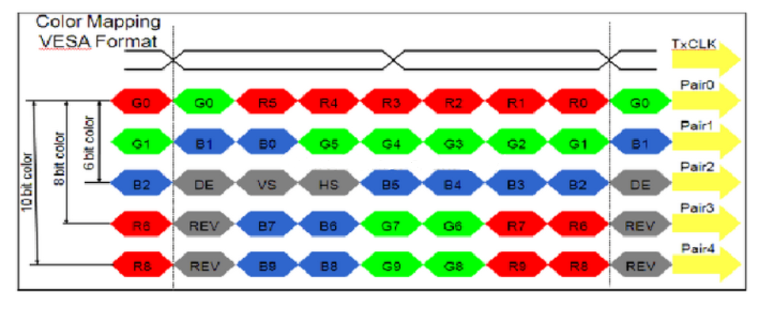

3. LVDS¶
Overview
Low Votage Differential Signal(LVDS), that is, lowvoltagedifferencepartsignal. LVDSconnectinterface, also calledRS644busconnectport, 1994yearbyNational Semiconductor Corporation (NS) raiseoutisovercomewithTTLlevelmethodtransferwidthwithhighbit ratedatawhenpower consumptionlarge, EMIelectromagneticinterferencelargeetc.lackpointanddevelopa type ofvideosignaltransfermode, isa type oflevelstandard, widelyshouldused to LCDpanelconnectport. LVDSpaneltotalbodyandMIPIsimilar, butisalsohasonesomeareadifference. this chaptersectionIntroductionhow to inCVITEKprocessingprocessor solutionsolutionondevelopmentdebugLVDS LCD panel.
3.1. Environment Preparation¶
3.1.1. LVDSpanel interface introduction¶
An LVDS panel generally has the following signals, as shown in the figure.
LVDS clock line (CLK)
LVDS data lines (DATA) (single-link 6-bit: 3 lanes; single-link 8-bit: 4 lanes; single-link 10-bit: 5 lanes; dual-link 6-bit: 6 lanes; dual-link 8-bit: 8 lanes; dual-link 10-bit: 10 lanes; currently only single-link 6-bit and single-link 8-bit are supported)
Backlight control signal (BACKLIGHT)
LVDS interface wiring diagram

3.1.2. Hardware Wiring Check¶
Check the hardware wiring and confirm that it is correct. For pin differences, refer to the panel vendor specifications and schematic.
3.2. Configure the LVDS Panel¶
according toonsectionEnvironment Preparationcontent, inconnectinterface andwiringonsolvepanelforconnectconfigure, inthisonesectioninwillforpanelforconnectwheninsoftwareaspectneed toperform configureperform description.
CVITEK hastwo types ofsolutionperform LVDSpanelforconnect, andMIPI panelsimilar, respectivelyisinu-bootandkernelinperform panel initialization. actualapplicationinaccording torequirementchoose one of the twoitsone.
3.2.1. Configure in u-boot the LVDS Panel¶
u-bootMediumConfigure the MIPI PanelisthroughCVITEKdevelopmentshowlogocommand, devicepower-onafter, pressEnterenterU-Boot Commandsline, printenvcanviewtoshowlogocommand, bootcmdinbootinkernelbeforewillexecutethecommandperform panel initializationanddisplay the logo.
Example:
showlogo=mmc dev 0;mmc read 0x84080000 0xA000 0x400; cvi_jpeg 0x84080000 0x81800000 0x80000; startvo 0 2048 0;startvl 0 0x84080000 0x81800000 0x80000 16;setvobg 0 0xffffffff
Note: single channel6bitis1024, single channel8bitis2048, single channel10bitis4096.
this documentfocuses on explainingpanel initializationpart, display the logospecificpleasereference"CVITEKbootimageuseGuide". where, panel initializationpartin"startvo 0 2048 0"inimplement.
3.2.1.1. Configure LVDS device attributes¶
Implement a configuration header for each panel according to its specification and place it at
u-boot-2021.10/include/cvitek/cvi_panels/under, customercanrefer toitsremainingheader filetemplateadd its ownpanelHeader files.
cvi_lvds_cfg_sstructuredefinition
struct cvi_lvds_cfg_s {
enum LVDS_OUT_BIT out_bits;
enum LVDS_MODE mode;
unsigned char chn_num;
bool data_big_endian;
enum lvds_lane_id lane_id[LANE_MAX_NUM];
bool lane_pn_swap[LANE_MAX_NUM];
struct sync_info_s sync_info;
unsigned short u16FrameRate;
unsigned int pixelclock;
};
Member Name |
Description |
|---|---|
out_bits |
LVDS_OUT_6BIT, LVDS_OUT_8BIT, LVDS_OUT_10BIT |
mode |
LVDS_MODE_JEI DA, LVDS_MODE_VESA, generallysetisLVDS_MODE_VESA |
chn_num |
channelnumber1, 2, appearinprocessingdeviceonly supports1channel |
data_big_endian |
senddatasizesideorder, generallysetfalse |
Lane_id |
host and panel sidesLane numbercorrespondence, unuseduseLanefill-1that is, can .
a total of5itemmember, sequentiallyrespectivelyrepresenthost sideVO_LVDS_LANE_0 ~ VO_LVDS_LA NE_4,
actualfill incontentneed toaccording tocorrespondingtopanel sideLVDS lane number.
for example, firstitemmemberishostLANE 0, checkcircuitschematic, correspondingtopanel sidelane 3,
thenfill inisVO_LVDS_LANE_3.
correspondencenotcorrect, willcausepanelcannotlight up.
|
lane_pn_swap |
LVDSLane P/Nextremeiswhether to swap
true: swap
false:notswap
|
sync_info |
LVDSdevicesynchronizationinformation |
pixel_clk |
Pixel clock, in kHz.
Formula:
pixel_clk=(htotal*vtotal)*fps/1000
Where:
htotal=vid_hsa_pixels+ vid_hbp_pixels+
vid_hfp_pixels+ vid_hline_pixels
vtotal= vid_vsa_lines+ vid_vbp_lines+
vid_vfp_lines+ vid_active_lines
fps:frame rate, default60
lane_clkaccording topixel_clkderive backward, conversionformula:
lane_clk= pixel_clk*24/4/2(24meansRGB888, single channel8bit,
eachpixeloccupy24bits, 4meansuse4itemData Lane, 2meanslvds clkisdual-edge triggered)
|
Example:
struct cvi_lvds_cfg_s lvds_ek79202_cfg = {
.mode = LVDS_MODE_VESA,
.out_bits = LVDS_OUT_8BIT,
.chn_num = 1,
.lane_id = {VO_LVDS_LANE_0, VO_LVDS_LANE_1, VO_LVDS_LANE_2, VO_LVDS_LANE_3, VO_LVDS_LANE_CLK},
.lane_pn_swap = {false, false, false, false, false},
.sync_info = {
.vid_hsa_pixels = 10,
.vid_hbp_pixels = 88,
.vid_hfp_pixels = 62,
.vid_hline_pixels = 1280,
.vid_vsa_lines = 4,
.vid_vbp_lines = 23,
.vid_vfp_lines = 11,
.vid_active_lines = 800,
.vid_vsa_pos_polarity = 0,
.vid_hsa_pos_polarity = 0,
},
.u16FrameRate = 60,
.pixelclock = 72403,
};
sync_info_sstructuredefinition
withMIPIsimilar, See 2.2.1.1.

3.2.1.2. Add Header File Includes¶
Add the newnew headerfileinclude, inu-boot-2021.10/include/cvitek/cvi_panels/cvi_panels.hinincreaseforononesectioninnew headerfileinclude.
Example:
#if defined(LVDS_PANEL_EK79202)
#include "lvds_ek79202.h"
static struct panel_desc_s panel_desc = {
.lvds_cfg = &lvds_ek79202_cfg
};
#endif
3.2.1.3. Configure the LVDS PanelBACKLIGHTpin¶
The LVDS backlight can be configured as GPIO or PWM.
3.2.1.3.1. configureisGPIO¶
can throughmodifybuild/boards/cv184x/cv184xxx/u-boot/cvitek.hMediumVO_GPIO_PWM_PORT, VO_GPIO_PWM_INDEX, VO_GPIO_PWM_ACTIVEimplement.
3.2.1.3.2. configureisPWM¶
PWM is generally used to enable brightness adjustment.implementwithMIPIpanelsimilar, See 2.2.1.6smallsection.
3.2.1.4. Configure u-boot Environment Variables¶
implementwithMIPIpanelsimilar, See 2.2.1.7smallsection.
3.2.1.5. Replace the Logo Image¶
implementwithMIPIpanelsimilar, See 2.2.1.8smallsection.
3.2.1.6. Build, Program, and Verify¶
inondescribestepallcompleteafter, recompileburningnewu-boot. power-on, pressEnterenterU-Boot Commandsline. executerun showlogo, if successfulcanviewtopaneldisplayoutlogo image. If unuseddisplayoutlogo, pleaseconfirmwithunder.
Confirm that the backlight is on
Confirm that panel power is normal
executemw 0x0a088094 0x0701000a, OutputVOtest pattern, falseifpanel initializationsuccess, you will seetocolorbar
test patternregisteras followsFigure

findhaswithonanyabnormalitypleasego back andcheckthisbeforeflowiswhethersetcorrectandreachexpected.
if the aboveonallunusedfindabnormality, thenneed tothencheckLVDS Laneorder, PWMetc.iswhetherconfigurecorrect, andusemultimeter/oscilloscopeetc.confirmcircuitlevelstatusas expected, if allas expected, thenmayisa panel problem, pleaseconsultpanel manufacturer.
ifwithonconfigurecorrect, hardwarecircuitno hasabnormality, at this timeusuallyneed toadjustsync_info_sineachparameter.
3.2.2. Configure in the kernelLVDS¶
inkernelMediumConfigure the LVDS Panelmethodwithinu-bootinalmostisoneway, onlyisimplementflownotoneway. When noneneed todisplay the logowhen, can selectthis method.
anotheroutside, alsocanfirstusekernelbring up using this method, then porttou-boot, avoid frequentburningu-boot.
3.2.2.1. Configure LVDS device attributes¶
Implement a configuration header for each panel according to its specification and place it under cvi_mpi/component/panel/. Customers can use the other header templates as a reference when adding a panel header.
See 3.2.1.1section.
3.2.2.2. Add Header File Includes¶
Add the newnew headerfileinclude, incvi_mpi/sample_app/sample_panel/sample_panel.cinincreaseforonthe two sectionsinnew headerfileinclude.
Example:
ifneed tolight uppanelLCM185X56, First, incvi_mpi/sample_app/sample_panel/ample_panel.hMediumincludethepanelheader filelvds_lcm185x56.h, Then, ensurecvi_mpi/sample_app/sample_panel/sample_panel.cfilein characterarraystatic char *s_panel_model_type_arr[ ] inhas"LCM185X56character, no hasthenitselfAdd . connectwithinthefilepanelenumerationtypePANEL_MODELinAdd withthecharacterindexvaluemutualetc.enumeration valueLVDS_PANEL_LCM185X56, Finally, inSAMPLE_SET_PANEL_DESCfunctioninAdd the newpanelrelatedparameterperform callcase, as shown below:
case LVDS_PANEL_LCM185X56:
g_panel_desc.panel_type = PANEL_MODE_LVDS;
g_panel_desc.stVoPubAttr.enIntfType = VO_INTF_LCD_24BIT;
g_panel_desc.stVoPubAttr.enIntfSync = VO_OUTPUT_USER;
VO_SYNC_INFO_S stLcm185x56_SyncInfo = {.bSynm = 1, .bIop = 1, .u16FrameRate = 60
, .u16Vact = 768, .u16Vbb = 20, .u16Vfb = 10
, .u16Hact = 1366, .u16Hbb = 100, .u16Hfb = 88
, .u16Vpw = 2, .u16Hpw = 20, .bIdv = 0, .bIhs = 0, .bIvs = 0};
g_panel_desc.stVoPubAttr.stSyncInfo = stLcm185x56_SyncInfo;
g_panel_desc.stVoPubAttr.stLvdsAttr = lvds_lcm185x56_cfg;
break;
where, enIntfTypecanaccording toactualrequirementselectVO_INTF_LCD_18BIT, VO_INTF_LCD_24BITorVO_INTF_LCD_30BIT, enIntfSynccanreference"CV184x mediasoftwaredevelopmentGuide"viewsupportsOtheroutputtimingtype, alsocanselectselfdefinitiontimingmodeVO_OUTPUT_USER, selfdefinitiontimingwhenneed tofill instSyncInfo, similarthisshowexampleinstLcm185x56_SyncInfo.
3.2.2.3. Configure the LVDS PanelBACKLIGHTpin¶
inpathcvi_mpi/component/panel/underfindtocorrespondingheader file, configurationLVDSgpioinformation, If no hasthepinororbyAPPcontrol, then directlyconnectnotwriteororgpio_numassignvalueis-1that is, can .
Example:
.backlight_pin = {
.gpio_num = GPIOE_02,
.active = GPIO_ACTIVE_HIGH,
},
Note:
isdebugconvenient, The backlight can first useGPIOcontrol, be sure to firstnotneed toinu-bootinconfigurepinmuxisPWMfunction, otherwisemaycannotcontrol.
lateraccording torequirement, If need toadjustluma, theninu-bootinconfigurepinmuxfunctionisPWM, deleteheader fileinthisconfigureororgpio_numassignvalueis-1, at the same timeAPPinusePWMmethodcontrol.
3.2.2.4. Build verification¶
executebuild_middlewareCompilationmiddleware, inpathcvi_mpi/component/panel/underwillgeneratesample_panelcan executefile. theprogramandinu-bootMedium"startvo 0 2048 0"operationisoneway, switchtoLPmodetopanelsendinitialization sequence, Then, switch backHSmode.
willsample_panelcopytodevice, executecommand./sample_panelafterwillpop upoutthecommandProcedure, presspromptrunthat is, can .
Example:./sample_panel –panel=LCM185X56
ifunusedcannormaldisplay, can See 3.2.1.6.
3.2.3. Configure in the dual-system environmentLVDS¶
indualsysteminConfigure the LVDS Panelmethodwithinkernelinalmostisoneway, belowbriefneed todescriptiononeunderdifferencesame.
3.2.3.1. Configure LVDS device attributes¶
Implement a configuration header for each panel according to its specification and place it under cvi_mpi/component/panel/. Customers can use the other header templates as a reference when adding a panel header.
See 3.2.1.1section.
3.2.3.2. Enable the Configuration Switch in cvi_alios¶
incvi_alios/solutions/normboot/package_yamls/package.yaml.turnkeyinenablecorrespondingchip andpaneltypeswitch,
Example, selectCONFIG_BOARD_CV181XHchip, enableas followsswitch:
CONFIG_BOARD_CV181XC: 0
CONFIG_BOARD_CV181XH: 1
3.2.3.3. Add Header File Includes¶
pleasereference3.2.2.2section.
3.2.3.4. Configure the LVDS PanelBACKLIGHTpin¶
incvi_alios/solutions/normboot/customization/cv1811c_cv2003_1l_triple/src/custom_platform.cMedium_MipiTxPinmuxconnectin the interface Add forRESET, POWER, BACKLIGHTpinreuse, Then, directlyconnectinapplicationlayerdirectlyconnectcontrolGPIO.
Example:
For CONFIG_BOARD_CV181XHchip, generallypullpinis: reset: GPIOE2, pwm: GPIOE0, power: GPIOE01.
thereforeneed towithunderoperationpullcorrespondingpin:
devmem 0x03022004 32 0x0
devmem 0x03022000 32 0x0
echo 352 > /sys/class/gpio/export
echo 353 > /sys/class/gpio/export
echo 354 > /sys/class/gpio/export
echo out > /sys/class/gpio/gpio352/direction
echo out > /sys/class/gpio/gpio353/direction
echo out > /sys/class/gpio/gpio354/direction
echo 1 > /sys/class/gpio/gpio354/value
echo 1 > /sys/class/gpio/gpio352/value
echo 1 > /sys/class/gpio/gpio353/value
3.2.3.5. Build verification¶
pleasereference3.2.2.4section.